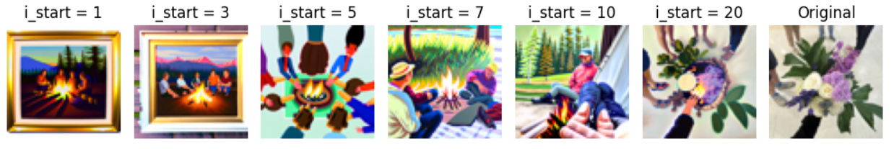
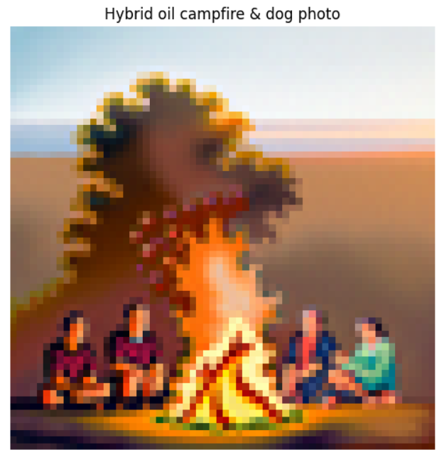

CS 180 Project 5: Fun with Diffusion Models
In this project, I had fun with diffusion models! In part A, I worked with an existing diffiusion model to generate some cool images. In part B, I implemented a diffusion model using PyTorch.
Part A: The Power of Diffusion Models!
Part 0: Setup
First, I got familiar with using the
num_inference_steps = 2
num_inference_steps = 20
num_inference_steps = 200
num_inference_steps = 1000
Part 1: Sampling Loops
A diffusion model tries to predict the noise in an image, which can then be used to remove the noise or generate a less noisy version of the image.
Part 1.1: Forward Process - Noise Addition
We add the appropriate amount of noise for timestep T by sampling noise from a Gaussian and scaling the image. The larger that our timestep t is, the greater the amount of noise. For this implementation, we have T = 1000, so we can have timesteps up to 999. Below, you can see the test image at the noise levels 250, 500, and 750 for a picture of the campanile.
Part 1.2: Classical Denoising
The classical method we test for denoising is a Gaussian blur filter. As you can see below, this does poorly.
Part 1.3: One-Step Denoising
Seeing that classical approaches let us down, we try denoising the image by estimating the noise using the UNet, passing it through stage_1.unet. This works better, as shown below.
Part 1.4: Iterative Denoising
Instead of just denoising in one step, we realize it would work better to iteratively denoise, taking steps of size 30 backwards from our initial noise level down to 0, which would be an estimate of the original image.
As you can see, the noisy image gradually becomes less noisy. Each step has a stride of 30, and I visualize every 5th one.
Overall, the predicted clean image using iterative denoising looks much better than the one computed in one step. However, it also depends heavily on the seed, as you can see below.
Seed = 240
Seed = 241
Seed = 480
Seed = 720
Part 1.5: Diffusion Model Sampling
We can generate images from scratch by starting from pure noise. Here are 5 examples we get of "a high quality photo".
Part 1.6: Classifier-Free Guidance (CFG)
The images from scratch would look better if we incorporate both an unconditional noise estimate and a conditional noise estimate. When we run CFG with a scale of γ = 7, these are 5 sample images we get, which are much higher quality.
Part 1.7: Image-to-Image Translation
Now, we generate new images by taking the original test image, adding some noise, and then iteratively denoising it. Here are the edits of the test image, with noise levels [1, 3, 5, 7, 10, 20] and text prompt "a high quality photo".
I also ran this on a "Danger" sign.
I also ran this on some flowers.
Part 1.7.1: Editing Images
Now, I ran this algorithm on non-realistic images and saw if they would become more realistic when projected onto the natural image manifold.
 |
Part 1.7.2: Inpainting
Now, I applied the same procedure to only a masked part of the image to essentially edit a portion of the picture.
Part 1.7.3: Text-Conditional Image-to-image Translation
Now, I did the same thing as SDEdit, but changed the prompt from "a high quality photo" to "an oil painting of people around a campfire" to guide the projection.
|  |
Part 1.8: Visual Anagrams
To generate visual anagrams, where the image looks like one thing in one direction and another thing when it's rotated 180 degrees, I denoised it twice at each step, once for the desired prompt, and then the flipped image with the second prompt. Then, at each step, I combined together the estimated noise by averaging it. I got some cool images!
 |
Part 1.9: Hybrid Images
To generate hybrid images, where it looks like one thing close up and another from afar, I denoised the image using 2 prompts, and at each denoising step, combined together the estimated noises by passing one of them through a highpass filter and the other through a lowpass filter. I used a gaussian blur with a kernel size of 33 and sigma set to 2.
|  |
Part B: Diffusion Models from Scratch!
Part 1: Training a Single-Step Denoising UNet
First, we implement a simple one-step denoiser, which maps a noisy image to a clean image. We implement this in pytorch, using a UNet architecture.
Part 1.2: Training a Denoiser
In order to train a denoiser, we need to have noisy images! Here are visualizations of different levels of noise.
 |
Part 1.2.1: Training
We train a UNet denoiser with hidden dimension 128 for σ = 0.5 on the MNIST dataset using MSE loss and an Adam optimizer with a learning rate of 1e-4. Here is the training curve over 5 training epochs, visualized both on the linear scale and log scale.
 |
 |
The denoising works reasonably well! Here are the results after just the first epoch:
 |
By the completion of the fifth epoch, the results are quite good:
 |
The denoiser was trained with σ = 0.5, but we are able to apply it to noisier and less noisy images and still get some denoising.
 |
Part 2: Training a Diffusion Model
Now, we want to train a real diffusion model, which predicts the noise in an image instead of completing one-step denoising.
Part 2.1: Adding Time Conditioning to UNet
We inject the scalar t representing the level of noise we are denoising from into the UNet model architecture with a fully connected block. When we want to sample an image, we start with noise, and iteratively decrease the "noise level" until we have a brand new clean image. Here is the training loss curve.
 |
 |
The denoising works reasonably well! Here are the results after five epochs:
 |
Here are the results of the fully trained model.
 |
Part 2.4: Adding Class-Conditioning to UNet
We train another version of the model where we can choose which digit we want to generate, instead of having no control over which class is created. Here is the training loss curve.
 |
 |
The denoising works reasonably well! Here are the results after five epochs:
 |
Here are the results of the fully trained model.
 |
Bells & Whistles: GIFs
Here is a gif of the sampling process for the time-conditioned model after 5 epochs of training.
 |
Here is a gif of the sampling process for the time-conditioned model after 20 epochs of training.
 |
Here is a gif of the sampling process for the time and class conditioned model after 5 epochs of training.
 |
Here is a gif of the sampling process for the time and class conditioned model after 20 epochs of training.
 |